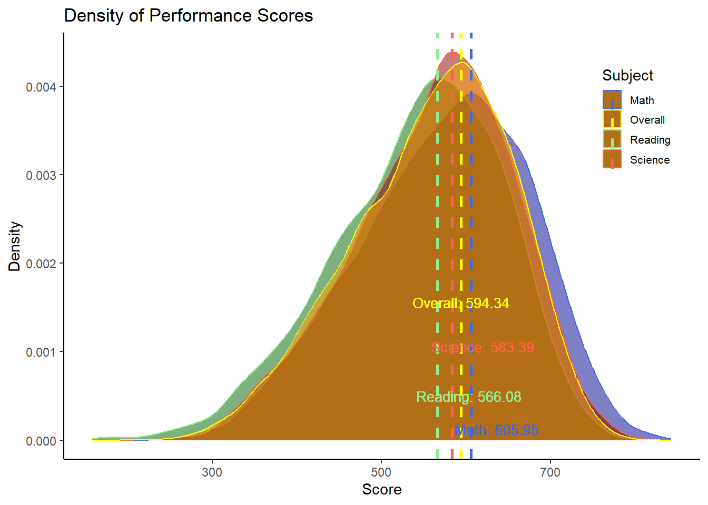
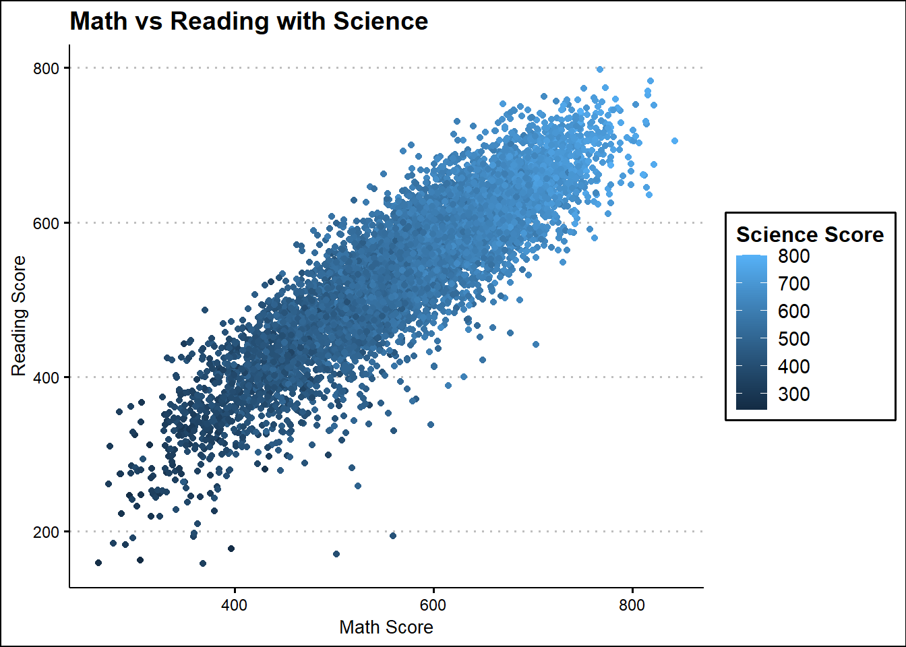

1. Loading packages and reading data
The data set under analysis is derived from PISA data (Student questionnaire data file). The original data set is a SAS data set, and it needs to be read using read.sas().
stu_qqq <- read_sas("data/cy08msp_stu_qqq.sas7bdat")
dimensions <- dim(stu_qqq)
cat("Rows:", dimensions[1], " Columns:", dimensions[2])Rows: 613744 Columns: 1279The original data set has a total of 613,744 rows and 1,279 columns.
2. Filter SG student records
In this practice, only Singapore students will be visually analysed. Therefore, the first step is to filter SG student records.
Show the code
Rows: 6606 Columns: 1279The filtered records has 6,606 rows and 1,279 columns, which means there is a number of 6,606 SG students involved in this questionnaire, and each of them has 1,279 data related. The filtered data set was saved as stu_qqq_SG.rds.
3. Student Performance
3.1 Mean of Plausible Values
The stu_qqq_SG.rds. includes 10 Plausible Values (PV) for Math, Reading, and Science each. To assess the performance of SG students in each subject, the average PV for each subject will be calculated as follows:
Show the code
Avg_PVMath <- rowMeans(stu_qqq_SG[, c("PV1MATH", "PV2MATH", "PV3MATH", "PV4MATH", "PV5MATH", "PV6MATH", "PV7MATH", "PV8MATH", "PV9MATH", "PV10MATH")])
Avg_PVRead <- rowMeans(stu_qqq_SG[, c("PV1READ", "PV2READ", "PV3READ", "PV4READ", "PV5READ", "PV6READ", "PV7READ", "PV8READ", "PV9READ", "PV10READ")])
Avg_PVScience <- rowMeans(stu_qqq_SG[, c("PV1SCIE", "PV2SCIE", "PV3SCIE", "PV4SCIE", "PV5SCIE", "PV6SCIE", "PV7SCIE", "PV8SCIE", "PV9SCIE", "PV10SCIE")])
PV_Avg <- cbind(stu_qqq_SG["CNTSTUID"], Avg_PVMath, Avg_PVRead, Avg_PVScience)
write_rds(PV_Avg, "data/stu_qqq_SG_PV_Avg.rds")
head(PV_Avg) CNTSTUID Avg_PVMath Avg_PVRead Avg_PVScience
1 70200001 605.2533 667.4296 639.7873
2 70200002 689.9528 627.6078 672.0703
3 70200003 676.7768 582.9252 660.0384
4 70200004 401.0528 361.3969 343.6425
5 70200005 436.1151 475.6763 479.2390
6 70200006 518.1055 431.4652 476.0031Each SG student’s Avg_PVMath, Avg_PVRead, and Avg_PVScience values reflect their proficiency in Math, Reading, and Science, respectively. In the table above, the first row shows the performance scores of Math, Reading and Science for student “70200001” is 605.2533, 667.4296, 639.7873, respectively.
Refer to the instruction and the PISA Data Analysis Manual to learn more about Plausible Value.
3.2 Distribution of Performance
3.2.1 Histogram
First, let’s see the frequency of each subject’s performance scores by histogram.
ggplot(data = PV_Avg, aes(x=Avg_PVMath)) +
geom_histogram(ins=20, boundary = 100, color="grey25", fill="grey90") +
geom_vline(aes(xintercept = mean(PV_Avg$Avg_PVScience), linetype="Mean", color="Mean"), size=1) +
geom_vline(aes(xintercept = median(PV_Avg$Avg_PVScience), linetype="Median", color="Median"), size=1) +
scale_linetype_manual(name = "Statistic", values = c(Mean = "dashed", Median = "dashed")) +
scale_color_manual(name = "Statistic", values = c(Mean = "green", Median = "red")) +
ggtitle("Distribution of SG Students' Science Performance") +
labs(color = "Statistic") +
theme_ipsum() +
theme(
legend.position = c(0.9, 0.7),
legend.text = element_text(size = 10),
legend.key.size = unit(5, "mm")
)
ggplot(data = PV_Avg, aes(x=Avg_PVRead)) +
geom_histogram(bins=20, boundary = 100, color="grey25", fill="grey90") +
geom_vline(aes(xintercept = mean(PV_Avg$Avg_PVScience), linetype="Mean", color="Mean"), size=1) +
geom_vline(aes(xintercept = median(PV_Avg$Avg_PVScience), linetype="Median", color="Median"), size=1) +
scale_linetype_manual(name = "Statistic", values = c(Mean = "dashed", Median = "dashed")) +
scale_color_manual(name = "Statistic", values = c(Mean = "green", Median = "red")) +
ggtitle("Distribution of SG Students' Science Performance") +
labs(color = "Statistic") +
theme_ipsum() +
theme(
legend.position = c(0.9, 0.7),
legend.text = element_text(size = 10),
legend.key.size = unit(5, "mm")
)
ggplot(data = PV_Avg, aes(x=Avg_PVScience)) +
geom_histogram(bins=20, boundary = 100, color="grey25", fill="grey90") +
geom_vline(aes(xintercept = mean(PV_Avg$Avg_PVScience), linetype="Mean", color="Mean"), size=1) +
geom_vline(aes(xintercept = median(PV_Avg$Avg_PVScience), linetype="Median", color="Median"), size=1) +
scale_linetype_manual(name = "Statistic", values = c(Mean = "dashed", Median = "dashed")) +
scale_color_manual(name = "Statistic", values = c(Mean = "green", Median = "red")) +
ggtitle("Distribution of SG Students' Science Performance") +
labs(color = "Statistic") +
theme_ipsum() +
theme(
legend.position = c(0.9, 0.7),
legend.text = element_text(size = 10),
legend.key.size = unit(5, "mm")
)
The three histograms depicted above show a left-skewed distribution, indicating that many values are concentrated near the lower end of the range, with infrequent higher values. This is reflected in a mean score lower than the median. This may be due to some students with extremely low scores pulling down the mean, which we can see in the following box plot.
3.2.2 Boxplot
Next, let’s use box plot to explore more.

PV_Avg_tidy <- PV_Avg %>%
pivot_longer(cols = c(Avg_PVMath, Avg_PVRead, Avg_PVScience), names_to = "Subject", values_to = "Score")
max_values <- PV_Avg_tidy %>% group_by(Subject) %>% summarise(max_value = max(Score))
ggplot(PV_Avg_tidy, aes(x = Subject, y = Score)) +
geom_boxplot() +
facet_grid(. ~ Subject, scales = "free_x") +
geom_hline(data = max_values, aes(yintercept = max_value, linetype = "Max"), color = "blue", show.legend = FALSE) +
geom_text(data = max_values, aes(x = Subject, y = max_value, label = sprintf("Max: %.2f", max_value)), size = 3, vjust = -0.5, hjust = 0.5, color = "blue") +
geom_hline(aes(yintercept = median(Score), linetype = "Median"), color = "red",show.legend = FALSE) +
coord_cartesian(ylim = range(PV_Avg_tidy$Score)) The three box plots reveal:
Some students scored extremely low, especially in Reading, followed by Science and Math.
Median scores follow the order: Math > Science > Reading.
Maximum scores follow the order: Math > Science > Reading.
Over 75% of students scored above 500 in Math and 75% of students scored above 500 in Science, while less than 75% scored above 500 in Reading.
3.2.3 Density curve
Next, by using density curve, we can see more of the distribution and central tendency of the performance scores.

peak_math <- density(PV_Avg$Avg_PVMath)$x[which.max(density(PV_Avg$Avg_PVMath)$y)]
peak_read <- density(PV_Avg$Avg_PVRead)$x[which.max(density(PV_Avg$Avg_PVRead)$y)]
peak_science <- density(PV_Avg$Avg_PVScience)$x[which.max(density(PV_Avg$Avg_PVScience)$y)]
ggplot(data = PV_Avg) +
geom_density(aes(x = Avg_PVMath, color = "Math"), fill = "blue", alpha = 0.2) +
geom_density(aes(x = Avg_PVRead, color = "Reading"), fill = "green", alpha = 0.2) +
geom_density(aes(x = Avg_PVScience, color = "Science"), fill = "red", alpha = 0.2) +
ggtitle("Density of SG Students' Performance") +
labs(x = "Average of Plausible Value") +
geom_vline(aes(xintercept = peak_math, color = "Math"), linetype = "dashed", size = 1) +
geom_vline(aes(xintercept = peak_read, color = "Reading"), linetype = "dashed", size = 1) +
geom_vline(aes(xintercept = peak_science, color = "Science"), linetype = "dashed", size = 1) +
geom_text(aes(x = peak_math, y = 0, label = sprintf("Math: %.2f", peak_math)),
vjust = - 0.5, hjust = 0.2, color = "blue", size = 3) +
geom_text(aes(x = peak_read, y = 0, label = sprintf("Reading: %.2f", peak_read)),
vjust = - 3.5, hjust = 0.2, color = "green", size = 3) +
geom_text(aes(x = peak_science, y = 0, label = sprintf("Science: %.2f", peak_science)),
vjust = - 8, hjust = 0.2, color = "red", size = 3) +
scale_color_manual(values = c("Math" = "blue", "Reading" = "green", "Science" = "red"), name = "Subject") +
theme_ipsum() +
theme(
legend.position = c(0.9, 0.9),
legend.text = element_text(size = 10),
legend.key.size = unit(5, "mm")
)The three density curves above reveal:
The performance for all three subjects show a tendency towards a leftward skew in their distributions.
Math scores are centered around 600, Science scores around 580, and Reading scores around 560.
3.2.4 Violin plot
Last, let’s present the distribution by violin plots.

ggplot(data = PV_Avg) +
geom_violin(aes(x = "Math", y = Avg_PVMath, fill = "Math"), position = "dodge", alpha = 0.5) +
geom_violin(aes(x = "Reading", y = Avg_PVRead, fill = "Reading"), position = "dodge", alpha = 0.5) +
geom_violin(aes(x = "Science", y = Avg_PVScience, fill = "Science"), position = "dodge", alpha = 0.5) +
ggtitle("Violin Plot of SG Students' Performance") +
labs(x = "Subject", y = "Plausible Value") +
theme_ipsum() +
theme(
legend.position = c(1, 1),
legend.text = element_text(size = 8),
legend.key.size = unit(4, "mm")
)The three violin plots reveal:
Scores for all three subjects are mainly concentrated between 500-700.
Math scores are centered above 600, while Reading and Science scores are primarily distributed in the 500-600 range. Moreover, the peak value for Science scores is higher than the peak value for Reading scores.
The performance distribution for all three subjects is left-skewed, with the lower half of the violin plots being longer.
4. Performance Influencers
4.1 Gender
4.2 School
4.3 Socioeconomic status
Reference
PISA Data Analysis Manual: SPSS, Second Edition